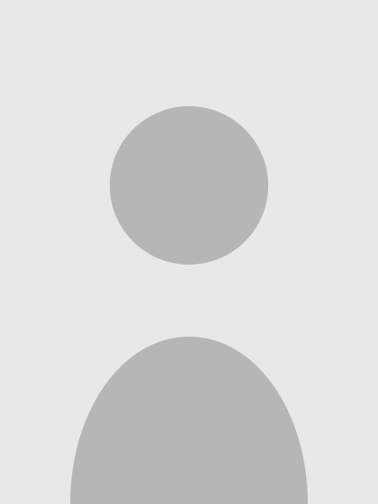
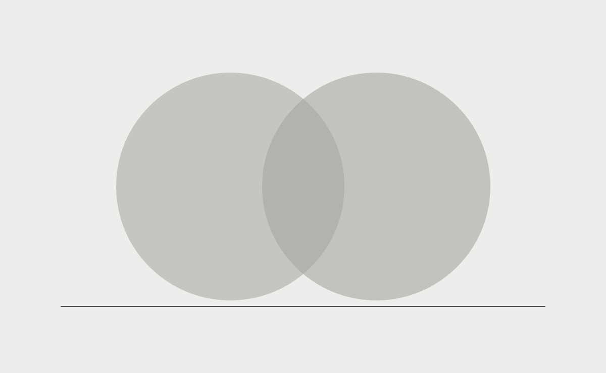
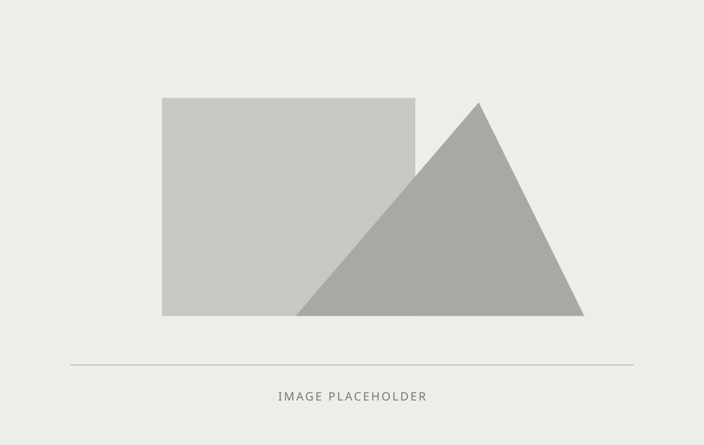

hello@example.com
your-handle
你的名字

个人介绍
这里写你的兴趣、研究方向与实践方法。保留一段清晰的个人介绍，让读者先理解你关心的问题，再进入下面的经历与作品。
教育经历
硕士院校研究方向与学位
| 课程表 | 第一学期课程 A 第一学期课程 B | 第二学期课程 A 第二学期课程 B | 第三学期课程 A 第三学期课程 B |
|---|
本科院校专业与学位
这里可以补充学校介绍或其他信息。
研究计划
这里是研究计划的简短介绍。说明研究问题、对象与方法，让读者可以在不打开长文的情况下了解方向。
论文
《论文标题》
摘要
这里是论文摘要的占位文字。保持简洁，并用下方按钮打开正文示例。
艺术实践
作品 A 2026
这里写作品的概念、制作过程与观看方式。

作品 B 2025
第二件作品的介绍放在这里。点击图像可放大。

更多作品
早期作品 2023
这里放早期作品的介绍。
群展
展览名称国家 城市 场所
个展
展览名称国家 城市 场所
策展与项目
项目名称国家 城市 场所担任角色
艺术驻留
驻留项目国家 城市
正在进行的项目
项目 A 2026
这里说明项目背景、当前阶段、合作方式与下一步计划。
项目 B 2026
第二个项目的占位介绍放在这里。
技能
这里列出与你的实践相关的技能，不必罗列与页面目标无关的工具。
环保工作
参与事项这里写工作内容与具体成果。